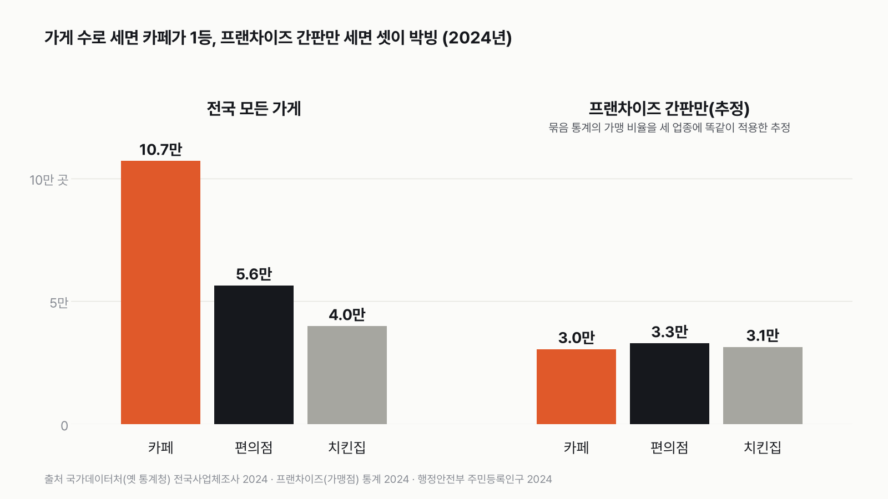
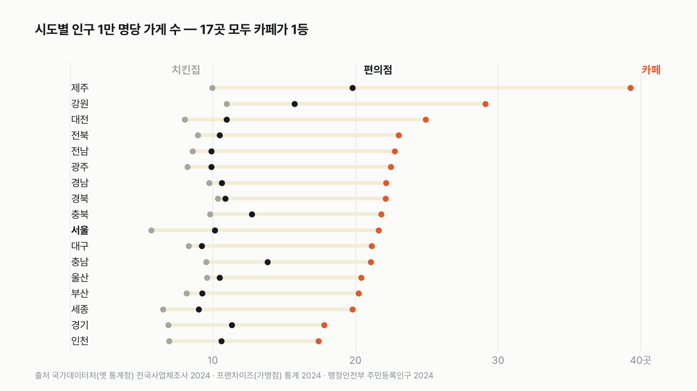
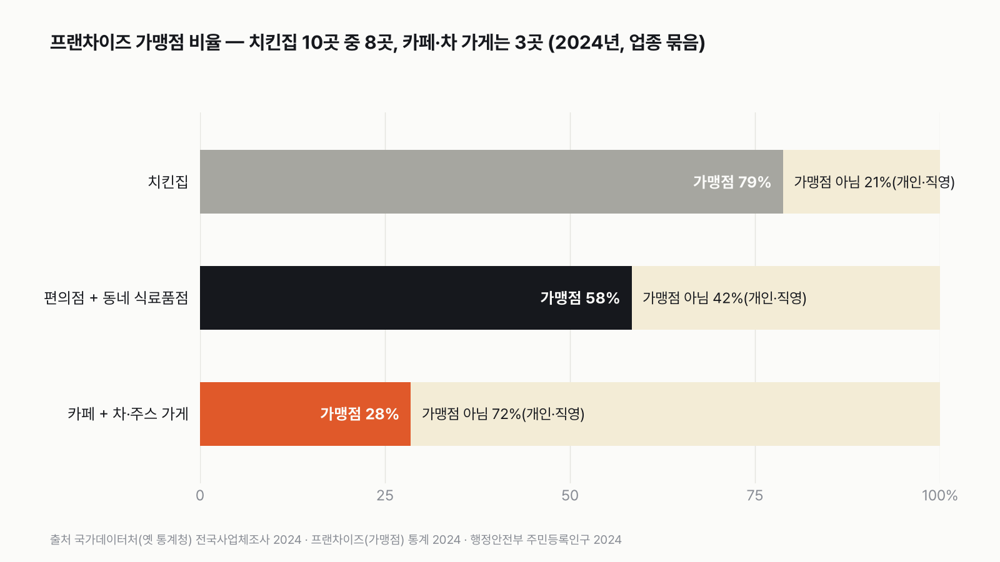
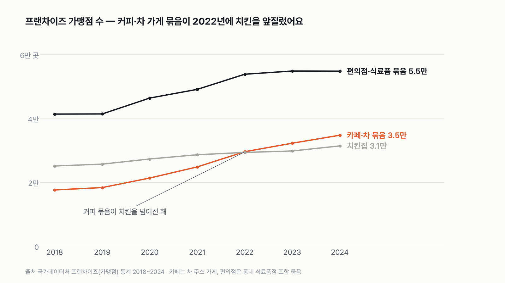

한국에 카페, 치킨집, 편의점 중 뭐가 제일 많을까
동네를 한 바퀴 돌면 셋 다 금방 눈에 띄어요. 먼저 골라 주세요. 투표하면 독자 예상과 데이터 결과를 나란히 보여 드려요.
- "한국은 치킨 공화국"이라는 말, 들어 보셨죠? 그런데 요즘 골목마다 보이는 건 카페 같기도 해요.
- 카페, 치킨집, 편의점 가운데 우리나라에 가장 많은 가게는 뭘까요?
- 국가데이터처(옛 통계청)가 전국 가게를 하나하나 센 공식 통계로 세 판 겨뤘어요. 투표하면 결과가 바로 아래에 열려요.
조건과 규칙
- 가게 정의는 나라가 정한 산업 분류를 따라요. 카페는 커피 전문점, 치킨집은 치킨 전문점, 편의점은 체인 편의점이에요.
- 세 업종을 같은 눈금으로 세려고, 셋 다 분류 가장 아래 칸 하나씩만 골랐어요. 차·주스 가게, 호프집, 동네 슈퍼는 따로예요.
- 전국 가게 수, 프랜차이즈 간판만 센 수, 시도별 인구 대비 가게 수, 세 판으로 겨뤄요.
독자 투표
한국에 카페가 많을까 치킨집이 많을까?
결과 요약
3판 카페 2승 1무 → 최종 카페 승
- 전국에 커피 전문점이 10만 7,055곳이에요. 편의점(5만 6,381곳)의 1.9배, 치킨집(3만 9,853곳)의 2.7배예요.
- 시도 17곳 모두 인구 대비 카페가 1등이에요. 프랜차이즈 간판만 세면 셋이 3만 곳 안팎으로 박빙이라 무승부예요.
- 치킨집은 10곳 중 8곳이 가맹점이고, 카페·차 가게는 10곳 중 3곳만 가맹점이에요. 그래서 간판으로 보는 거리 풍경과 실제 가게 수가 달라요.
그래서? 한국에서 가장 많은 가게는 카페예요. 치킨집은 셋 가운데 가장 적어요. 다만 치킨집은 대부분 이름난 간판을 달고 있어요.
독자 예상 vs 데이터 결과
한국에 카페가 많을까 치킨집이 많을까?
데이터로 보면 카페. 전국 가게 수로 카페가 치킨집의 2.7배예요. 프랜차이즈 간판만 세면 둘은 거의 비슷해요.


| 판 | 카페 | 편의점 | 치킨집 | 승자 |
|---|---|---|---|---|
| 1판 전국 가게 수(측정) | 107,055곳 | 56,381곳 | 39,853곳 | 카페(편의점의 1.9배) |
| 2판 프랜차이즈 간판만(추정) | 약 30,500곳 | 약 32,900곳 | 31,397곳 | 무승부(1등과 3등 차이 1.08배) |
| 3판 시도 17곳 인구 대비 1등(측정) | 17곳 | 0곳 | 0곳 | 카페 |
| 최종 | 3판 카페 2승 1무 → 카페 승 |
모두 2024년 통계예요. 1·2판은 1등이 2등보다 1.1배 이상 많아야 이겨요. 1판과 3판은 같은 전국사업체조사에서 나온 숫자라, 3판은 1판을 지역별로 나눠 다시 본 판이에요. 2판만 추정이 들어가요. 그 이야기는 2판에서 자세히 할게요.
1판 전국 가게 수: 카페 승(편의점의 1.9배)
국가데이터처(옛 통계청) 전국사업체조사는 한 장소에서 영업하는 가게를 하나하나 세요. 2024년 커피 전문점은 10만 7,055곳이에요. 체인 편의점 5만 6,381곳의 1.9배, 치킨 전문점 3만 9,853곳의 2.7배예요. 인구 1만 명당으로 바꾸면 카페 21곳, 편의점 11곳, 치킨집 8곳이에요.
저는 "치킨 공화국"이라는 말 때문에 치킨집이 적어도 편의점과는 비슷할 줄 알았어요. 그런데 셋 가운데 치킨집이 가장 적었어요. 카페 세 곳이 있을 때 치킨집은 한 곳 남짓이에요.
정의를 넓혀도 순위는 같아요. 카페에 차·주스 가게를, 치킨집에 호프집을, 편의점에 동네 식료품점을 똑같이 더해 봤어요. 카페 12만 1,923곳, 편의점 9만 3,929곳, 치킨집 5만 871곳으로 여전히 카페가 1.3배 앞서요. 편의점만 넓히고 나머지는 그대로 둬도 카페가 1.14배 많아요.


2판 프랜차이즈 간판만: 무승부(셋 다 3만 곳 안팎)
거리에서 눈에 띄는 건 이름난 간판이에요. 국가데이터처 프랜차이즈 통계로 가맹점만 세 봤어요. 다만 이 통계는 카페를 차·주스 가게와, 편의점을 동네 식료품점과 한 묶음으로 내요. 치킨집만 단독이에요. 공표된 묶음 값은 편의점 묶음 5만 4,780곳, 카페 묶음 3만 4,735곳, 치킨집 3만 1,397곳이에요.
그래서 세 업종을 같은 방법으로 맞췄어요. 묶음 전체의 가맹점 비율이 그 안의 업종마다 같다고 보고 나눴어요. 카페 묶음은 28.5%, 편의점 묶음은 58.3%예요. 이렇게 하면 커피 전문점 가맹점은 약 3만 500곳, 체인 편의점 가맹점은 약 3만 2,900곳, 치킨집은 3만 1,397곳이에요. 1등과 3등 차이가 1.08배라 셋 다 무승부예요.
이 판은 추정이라 가정에 따라 크게 움직여요. 체인 편의점은 이름 그대로 체인이라, 실제 가맹 비율은 동네 식료품점이 섞인 묶음 평균보다 높을 가능성이 커요. 묶음 값을 그대로 쓰면 편의점이 1.6배로 이겨요. 반대로 묶음 안 차·주스 가게와 동네 식료품점이 모두 가맹점이라는 가장 낮은 끝을 잡으면 치킨집이 1.6배로 이겨요. 어느 쪽으로도 확실하게 가를 공식 숫자가 없어서 무승부로 뒀어요.
3판 시도 17곳: 카페 승(17곳 모두)
인구 1만 명당 가게 수로 시도마다 1등을 가렸어요. 17곳 모두 카페가 1등이에요. 카페가 가장 촘촘한 곳은 제주(1만 명당 39곳)와 강원(29곳)이에요. 다만 1만 명당은 주민등록 인구로 나눈 값이라, 그 지역을 찾는 방문객은 들어가지 않아요. 가장 적은 인천·경기도 17~18곳으로, 편의점과 치킨집보다 많아요.
서울은 치킨집이 가장 드문 곳이에요. 1만 명당 5.7곳으로 17개 시도 가운데 가장 적어요. 서울에서는 카페가 치킨집의 3.8배예요. 치킨집이 가장 촘촘한 곳은 강원·경북으로, 1만 명당 10곳이 넘어요. 그곳에서도 카페가 2배 넘게 많아요.


치킨집은 대부분 가맹점, 카페는 대부분 아니에요
치킨집은 10곳 가운데 8곳(79%)이 가맹점이에요. 카페·차 가게 묶음은 10곳 가운데 3곳(28%)만 가맹점이에요. 나머지는 개인이 하는 가게이거나, 본사가 직접 운영하는 직영점이에요. 직영점도 가맹점이 아니라서 이 통계에서는 '가맹점 아님'으로 잡혀요. 그래서 카페는 같은 간판이 붙은 가맹점보다 저마다 다른 가게가 훨씬 많아요.


커피·차 가게 묶음이 치킨을 앞지른 해
프랜차이즈 가맹점만 따로 보면 2018년엔 치킨집(2만 5,110곳)이 커피·차 가게 묶음(1만 7,615곳)보다 많았어요. 커피·차 가게 묶음은 6년 만에 2배(3만 4,735곳)가 됐고, 치킨집은 25% 늘었어요. 커피·차 가게 묶음과 치킨집은 2022년에 자리를 바꿨어요. 편의점 묶음 가맹점은 2022년부터 5만 4천 곳 안팎에 머물러 있어요.
2023년에서 2024년 사이 전체 가게 수도 같은 방향이에요. 커피 전문점은 603곳 늘었고, 치킨 전문점은 64곳 늘었고, 체인 편의점은 751곳 줄었어요.
정리하면 이 규칙과 자료로는 최종 카페 승, 2승 1무예요. 실제로 센 가게 수에서는 카페가 전국으로도 17개 시도 모두에서도 넉넉히 이기고, 추정이 들어가는 프랜차이즈 간판만 세면 셋이 박빙이에요. 투표 질문인 카페와 치킨집으로 좁히면 가게 수로 카페가 2.7배 많아요.
이 숫자는 어디서 왔나요
출처
기준일 2024년 통계예요(2026년 11월 9일 KOSIS에서 받음). 조건은 2026년 11월 9일, 계산하기 전에 정했어요.
국가데이터처전국사업체조사
- 시도·산업·사업체구분별 사업체수KOSIS DT_1K52F01
2023·2024년 커피 전문점·치킨 전문점·체인화 편의점 등 시도별 가게 수
국가데이터처프랜차이즈(가맹점) 통계
- 주요 업종별 가맹점 여부별 현황KOSIS DT_FR0005
2018~2024년 업종 묶음별 가맹점·비가맹점 수
행정안전부주민등록인구현황
- 주민등록인구KOSIS DT_1B040A3
2024년 시도별 인구
어떻게 셌나요
- 가게 수: 국가데이터처(옛 통계청) 전국사업체조사의 2024년 사업체 수예요. 사업체는 한 장소에서 영업하는 가게 하나예요. 체인점도 가게마다 하나씩 세요.
- 정의: 한국표준산업분류 11차의 가장 아래 칸을 썼어요. 카페 = 커피 전문점, 치킨집 = 치킨 전문점, 편의점 = 체인화 편의점이에요. 차·주스 가게(기타 비알코올 음료점), 호프집(생맥주 전문점), 동네 슈퍼(기타 음식료품 위주 종합소매)는 넓은 정의에서만 더했어요. 세 업종을 똑같이 넓혔어요.
- 프랜차이즈: 국가데이터처 프랜차이즈(가맹점) 통계의 2024년 가맹점 수예요. 이 통계는 같은 사업체조사에서 가맹점인지 아닌지를 나눈 거라, 가맹점과 비가맹점을 더하면 1판 숫자와 정확히 맞아요(치킨 3만 9,853곳).
- 2판 추정: 공표된 묶음의 가맹 비율이 묶음 안 업종마다 같다고 놓았어요. 카페 묶음 28.5%, 편의점 묶음 58.3%를 각각 커피 전문점과 체인 편의점에 곱했어요. 치킨집은 단독이라 공표 값 그대로예요. 이건 측정이 아니라 가정이에요.
- 인구: 행정안전부 주민등록인구 2024년 시도별 값이에요.
- 판정: 1·2판은 1등이 2등의 1.1배 이상이면 1등 승, 아니면 무승부예요. 3판은 1등을 차지한 시도가 가장 많은 업종이 이겨요. 셋 다 계산하기 전에 정했어요.
한계 6가지
이 데이터로 말할 수 없는 것
- 2판은 추정이에요. 카페·편의점 가맹점 수는 이웃 업종이 섞인 묶음으로만 공표돼서, 묶음의 가맹 비율을 업종마다 같다고 놓고 나눴어요. 체인 편의점의 실제 가맹 비율은 이보다 높을 가능성이 커요. 묶음 값을 그대로 쓰면 편의점 승, 가장 낮은 끝을 잡으면 치킨집 승이에요.
- 2판은 가맹점만 세서, 스타벅스처럼 본사가 직접 운영하는 직영 카페는 빠져요. 직영점까지 간판으로 치면 카페 쪽이 늘어요.
- 행정안전부 지방행정 인허가 자료(업태 '커피숍', '통닭(치킨)')로도 세어 보려 했지만 내려받기가 되지 않았어요. 이 자료는 영업 신고 기준이라 사업체조사와 숫자가 다를 수 있어요.
- 치킨을 팔지만 분류가 호프집이나 한식당인 가게는 치킨집에서 빠져요. 넓은 정의에서 호프집을 더해도 순위는 같았어요.
- 사업체조사는 종사자가 1명 이상인 가게를 세요. 무인 카페나 무인 편의점이 어떻게 분류되는지는 따로 확인하지 못했어요.
- 1만 명당은 주민등록 인구로 나눈 값이라 관광객·통근자가 많은 지역은 실제 손님 수보다 가게가 많아 보여요.
새 글 나오면 받아 보기
피드 리더 앱에 이 사이트 주소를 한 번 넣어 두면, 새 글이 올라올 때 앱에 떠요. 가입이나 메일 주소는 필요 없어요.
받는 법 보기
- 피드 리더 앱을 하나 골라요. 새 글을 모아 보여 주는 앱이에요. 예를 들면 Feedly나 Inoreader가 있어요. 둘 다 무료고 웹·휴대폰에서 써요.
- 앱에서 '구독 추가'(+)를 누르고 아래 주소를 붙여 넣어요.
- 끝이에요. 새 글이 올라오면 앱 목록에 떠요.
https://protofu.github.io/opendata-insight/feed.xmlFeedly를 쓴다면 여기를 눌러 바로 추가할 수도 있어요.